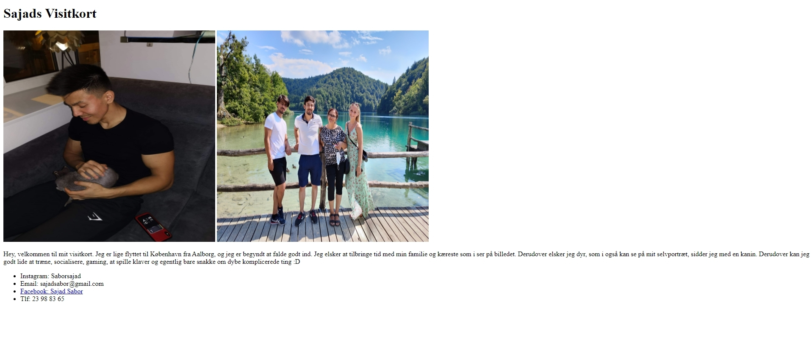

Responsive_site_v2 (02.04.02)
Læringsmål:
- Viden forståelse for i erhvervet anvendte metoder til brugertest af digitale produktioner
- Viden viden om grundlæggende principper for komposition og layout i digital medieproduktion
- Viden viden om praksisnære designprocesser og dokumentationsformer i digital medieproduktion
- Viden viden om aktuelle digitale udvekslingsformater i digital medieproduktion
- Viden viden om grundlæggende metoder til modellering, strukturering og udvikling af digitale brugergrænseflader
- Viden viden om centralt anvendte teknologier, herunder client-server relationer, og deres betydning for udvikling af brugergrænseflader.
- Færdigheder anvende grundlæggende teorier, metoder og værktøj til design og udvikling af brugergrænseflader
- Færdigheder anvende grundlæggende metoder til modellering og strukturering i udviklingen af brugergrænseflader
- Færdigheder anvende og vurdere grundlæggende teknologier og udviklingsmiljøer til udvikling af brugergrænseflader, herunder metoder og teknologier til versionsstyring.
- Kompetencer under vejledning tilegne sig grundlæggendeviden, færdigheder og kompetencer indenfor design og udvikling af digitale brugergrænseflader.
Teori, Metoder og Teknikker
I det her tema blev jeg introduceret til grundlæggende kodning og designforståelse. Før jeg lærte at kode, blev jeg sat ind i hvordan vi opbygger designprocessor og dokumentationsformer i medieproduktion. Vi lærte også om design temaer og fik personligt tildelt et tema som vi skulle gå i dybden med. For mit vedkommende var det Video Gaming(Retro) tema. Jeg lærte om styletile og moodboard, som bruges til at give et indtryk af hvordan et design er bygget op, moodboard bruges til inspiration. Til dette benyttede jeg mig meget af Adobe XD, som bruges til at skitsere digitalt. Idéen med dette tema var at skabe sin egen hjemmeside og uploade de afleveringer vi fik lavet i klassen ind i hjemmesiden, herisær var Rsponsive site slutproduktet og kernen af temaet. Jeg fik tilegnet viden om hvordan client-server relationer fungerer og hvordan man indsætter filer ind i sit domæne på en sikker måde gennem filezilla (ftp client). Jeg ejer mit domæne gennem Azehosting, og da de har deres egen FTP client indbygget, benyttede jeg mig af den i stedet.
Idéen med dette tema var at skabe sin egen hjemmeside og uploade de afleveringer vi fik lavet i klassen ind i hjemmesiden, herisær var Rsponsive site slutproduktet og kernen af temaet. Jeg fik tilegnet viden om hvordan client-server relationer fungerer og hvordan man indsætter filer ind i sit domæne på en sikker måde gennem filezilla (ftp client). Jeg ejer mit domæne gennem Azehosting, og da de har deres egen FTP client indbygget, benyttede jeg mig af den i stedet. Udover det blev vi også introduceret til Brackets som vores kodnings platform, og hvordan man kunne benytte de forskellige browser til at se hvordan en hjemmeside er kodet
Jeg blev undervist i styling , gridbaseret layout, som jeg benytter mig af på denne side, farver, komposition og grundlæggende CSS. For at få styr på færdighederne lavede jeg en masse repetitionsopgaver. Jeg startede med simple ting såsom visitkort og kæledyrs opgaver, hvor jeg kun brugte Html. Efter at have forstået de grundlæggende principper bag html, forsøgte jeg at kombinere noget styling, ved at lave opgaver som 16-bokse. Udover opgaverne blev jeg altid bedt om at søge tingene selv på google og specielt w3 schools.

Responsive Site
Alt det viden jeg fik fra de forskellige repetitions opgaver, skulle jeg bruge til vores hovedprojekt Responsive_site_v2 (02.04.02). Formålet med dette projekt var at jeg skulle opbygge en helt side som er responsivt, men samtidig følger en helt specifikt struktur. Til den responsive del brugte jeg Media Query. Media Query bruges til at definere funktioner hvis specifikke betingelser er opfyldt, f.eks. hvis width er 1200, skal tekststørrelsen være 14 pixels.Til at følge en helt specifikt struktur, brugte jeg et wireframe og layoutdiagram. Wireframen viser hvordan strukturen af siden skal opstilles og layoutdiagrammet giver overblik over kodningen af de forskellige elementer og sektioner
Jeg vil pointere at jeg var til at starte med ikke begejstret for at jeg skulle følge et layout diagram eller wireframe, men nu kan jeg se formålet med det. Det er super effektivt og fungerer ligesom et kort, som dirigerer en i den rigtige retning, når man er faret vild.
Selvom jeg fik en del viden til at kunne udføre opgaverne indenfor den responsive side, var det stadig en nødvendighed at få hjælp fra vejlederene. Især til grid-systemet og span af billeder.
Styletile
Udover den responsive del af siden, blev jeg undervist i hvordan en styletile bliver lavet og hvad formålet med en styletile er. Styletile er hvordan stilen og designet af en side er bygget op, derfor var det også nødvendigt at jeg også blev lært i hvad forskellen mellem CMYK og RGB farver er, og hvordan alle farver har sin egen kode. Til styletilen implementerede jeg fonts fra eksterne kilder. Til færdiggørelsen af styletilet blev jeg undervist i photoshop for at udføre mit splash icon og favicon.Jeg synes at det her tema var på daværende tidspunkt var ekstrem udfordrende og overflødig, især hvorfor vi skulle lære Html og CSS i sådan en dybde, når der er platforme som allerede har udarbejdet det meste for os, f.eks. wordpress og shopify. Jeg kan nu se meningen med det hele, og hvor vigtigt det her tema har været, da det har lagt fundamentet for hele forståelsen af hvordan en side er opbygget.